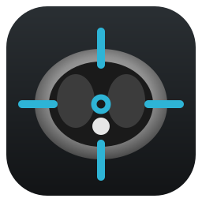

Windows
Windows 10 ou 11 (64 bits)
Baixar para Windows- Clique duas vezes no arquivo baixado.
- Clique em Avançar e depois em Concluir. Não precisa de senha de administrador.
- O VisualTC abre sozinho. Depois, use o ícone na área de trabalho.

Visualizador de imagens médicas DICOM: tomografia, ressonância, raio-X e ultrassom. Gratuito e funciona sem internet.
O VisualTC é um programa para computador. Abra esta página no computador (Windows, Mac ou Linux) onde você vai ver os exames.
Windows 10 ou 11 (64 bits)
Baixar para WindowsmacOS 12 ou mais novo · chip Apple (M1, M2, M3, M4…) ou Intel
Baixar para MacUbuntu 22.04 ou mais novo, Debian 12, Linux Mint 21 e outras (64 bits)
Ubuntu, Debian, Mint (.deb)Não apareceu Instalar? No Terminal, na pasta Downloads:
sudo apt install ./visualtc_amd64.deb
AppImage: clique com o botão direito no arquivo › Propriedades › marque Permitir executar como programa; depois, clique duas vezes. Não instala nada.
A pasta do CD ou do pendrive, ou o arquivo compactado recebido (ZIP, RAR, 7z).
Abrir para arquivos e exames compactados, Pasta para o CD ou uma pasta.
No CD, no pendrive, numa pasta ou num ZIP: Abrir no VisualTC.
Aparece com programas novos, que ainda não são conhecidos pelo Windows.